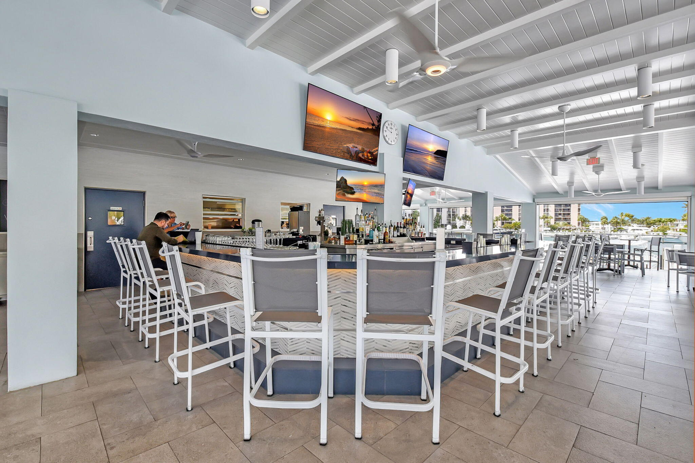

Thank you to everyone who participated in our July 2026 survey. Your feedback helps shape our community.

Nearly half of all respondents visit the Chickee Bar
times every week
reinforcing its importance as one of YARCOBR's most valued community amenities.
Residents overwhelmingly value what makes YARCOBR unique — its waterfront lifestyle, private beach, marina, tropical setting, and strong sense of community. Many respondents described the community itself as the primary reason they chose to purchase here.
The most frequently mentioned suggestions include enhancing the Chickee Bar dining experience, modernizing common areas, expanding guest amenities such as showers and lockers, and continuing to improve communication between residents, management, and the Board.
Overall, the survey reflects a community that is proud of where it lives and eager to see thoughtful investments that preserve YARCOBR's unique character while enhancing the resident experience.
Community Pulse™ is intended to provide residents with anonymous insights into our community. All responses are anonymous — individual responses are never published or attributed.